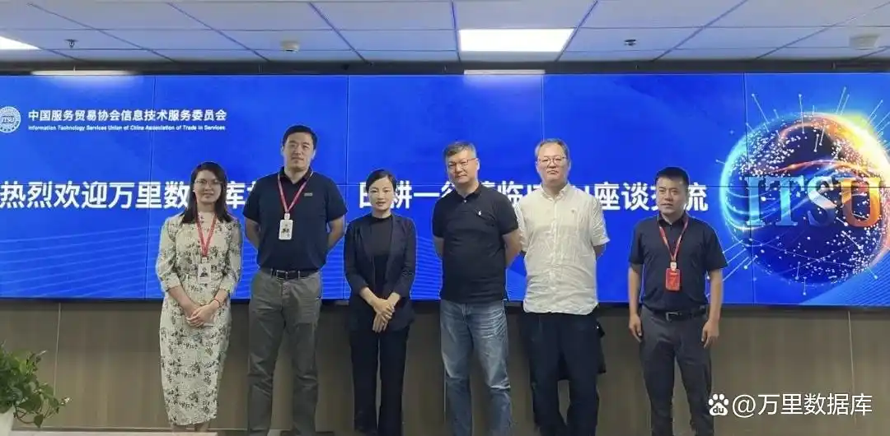
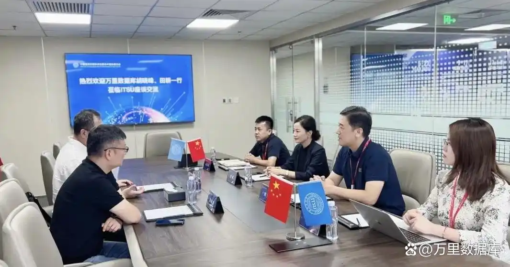

万里数据库领导前往ITSU访谈交流 共谋信息技术服务创新发展
近日，万里数据库总经理助理胡晓峰及销售总监田耕一行前往中国服务贸易协会信息技术服务委员会（简称“ITSU”），与ITSU主任委员单位贤牛（北京）科技有限公司副总经理刘剑、ITSU副秘书长刘阳等进行了深入而富有成效的座谈交流。
贤牛（北京）科技有限公司销售总监孙纪伟、客户经理刘洋共同参加座谈。此次交流，不仅加深了双方对彼此业务领域的理解，更为未来双方在信息技术领域展开深度合作奠定了坚实基础。

访谈合影
座谈伊始，ITSU副秘书长刘阳首先代表ITSU对万里数据库高层领导的到访表示热烈欢迎，并详细介绍了ITSU的成立背景、当前发展成就及未来工作规划。
她指出，ITSU旨在为会员提供高价值服务，促进供需对接与产教融合，推动服务贸易增长及中国IT服务国际化，通过整合行业资源推动信息技术服务行业的创新发展，提升行业整体竞争力。
刘阳副秘书长特别提到10月将在上海举办的“加速企业数字化转型 推动新型工业化发展”高峰论坛，以及由中石化共享服务公司牵头的《共享模式下的信息技术运维服务管理规范》团体标准编制工作等重点项目，展现了ITSU在推动行业标准化、促进数字化转型方面的积极作为。
随后，万里数据库总经理助理胡晓峰全面介绍了公司发展历程、技术实力及市场布局。胡晓峰表示，万里数据库作为国家高新技术企业及国家级“专精特新”小巨人企业，专注于国产自主创新数据库产品的研发，拥有超过20年技术积累，并于去年首批通过了国家安全可靠测评，是国家层面认可的“信创数据库”产品，安全数据库GreatDB产品在功能、性能、稳定性及易用性等方面均处于行业领先地位，广泛应用于金融、运营商、能源、政企、交通等多个行业的关键业务系统中，赢得了市场高度认可。
此外，公司主导创建了GreatSQL开源数据库社区，已成为国内MySQL技术路线的重要开源分支。社区的愿景是成为“中国广受欢迎的开源数据库社区”，于2022年获得中国信通院可信开源社区与可信开源项目双认证，2023年正式捐赠给开放原子开源基金会，成为其旗下孵化项目，拥有高度的社区活跃度与金融、通信、IT、互联网等多行业落地应用实践。

座谈交流
座谈会上，双方热烈探讨了国家信创计划的核心议题，深入剖析信创厂商售后服务体系的建设路径，并直面信创运维服务中的痛点与难点，力求寻找破解之道。
在交流过程中，双方就如何为信创产业培养并输送优秀人才、如何整合IT供应链资源以深化行业合作等方面达成了广泛而深刻的共识。双方均表示，此次座谈不仅加深了彼此了解，更为双方未来合作的广阔前景奠定了坚实基础。双方期待以此为契机，不断拓展合作领域，深化合作内容，携手共绘信息技术服务行业的美好蓝图。
会议尾声，贤牛科技副总经理刘剑作为ITSU主任委员单位代表，对ITSU下半年的工作规划给予高度评价，并表达了贤牛科技与万里数据库深化合作的殷切期望。他强调，贤牛科技将充分借助ITSU这一平台优势，携手万里数据库在多个关键领域，如团体标准共同制定、信创项目加速推进及运维服务全面优化等多方面展开深入合作。
万里数据库总经理助理胡晓峰表示，公司将充分发挥自身的技术优势、实践优势及生态优势，与贤牛科技携手并进、多措并举，为推动信息技术服务行业的持续繁荣发展贡献万里力量，共谋信息技术服务创新发展。